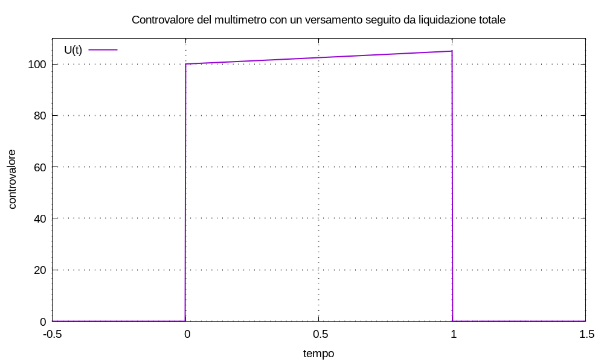

Modellizziamo versamenti e prelievi, cioè la movimentazione di capitale, come impulsi di Dirac δ(t) in ingresso a tale sistema, con ampiezza algebrica; scegliamo la convenzione:
non consideriamo ingressi al sistema che non siano impulsi. La movimentazione si può scrivere:
M(t) = Σk=0→K Ck δ(t - tk)
in cui le ampiezze Ck rappresentano l’entità dei movimenti di capitale.
Sappiamo che un sistema lineare tempo–invariante risponde agl’impulsi con funzioni esponenziali e che vale il teorema di sovrapposizione delle cause e degli effetti; definiamo il controvalore del conto deposito, cioè la risposta del sistema multimetro all’ingresso applicato, come la funzione:
U(t) = Σk=0→K Ck u(t - tk) esp[λ (t - tk)]
Il multimetro è caratterizzato dalla costante λ che rappresenta la remunerazione della giacenza; denominiamo tale costante remunerazione del multimetro. In generale, la remunerazione può essere positiva, nulla o negativa; in alcuni casi in cui risulta negativa: la denominiamo decurtazione oppure drenaggio.
Definiamo la funzione log1p(X) = log(1 + X) in cui il logaritmo è quello naturale; possiamo immaginarci che il multimetro, in quanto dispositivo virtuale, abbia una manopola da ruotare che ci permette di configurare la remunerazione che desideriamo: regolando la manopola su 4 ÷ 100 = 0,04 = 4% la costante è configurata al valore:
λ = log1p(4 ÷ 100) = log1p(0,04) = log1p(4%) ≈ 0,03922071315328133
posto λ = log1p(J), osserviamo che risulta:
esp(λ) = esp(log1p(J)) = esp(log(1 + J)) = 1 + J
definita la funzione espm1(X) = esp(X) - 1, risulta:
espm1(λ) = espm1(log1p(J)) = esp(log(1 + J)) - 1 = J
La regolazione λ = log1p(0) = 0 rende il controvalore una combinazione lineare di gradini:
U(t) = Σk Ck u(t - tk)
in questo caso il multimetro non remunera la giacenza; denominiamo questa configurazione inerte.
Per quanto definito, fissata la remunerazione del multimetro: possiamo caratterizzare ogni movimento di denaro con la coppia (tk; Ck) e organizzare tutti i movimenti nella tupla:
{ (t0; C0), ..., (tk; Ck), ... }
significa che, fissata la remunerazione e scritta la tupla: abbiamo tutto ciò che ci occorre per scrivere sia la movimentazione che il controvalore in forma estesa:
M(t) = Σk Ck δ(t - tk)
U(t) = Σk Ck u(t - tk) esp[λ (t - tk)]
Osservazione La definizione di piú movimenti nello stesso istante è possibile e crea nessun problema; se vogliamo possiamo raccogliere a fattor comune:
C1 u(t - t0) esp[λ (t - t0)] + C2 u(t - t0) esp[λ (t - t0)] == (C1 + C2) u(t - t0) esp[λ (t - t0)]ma non è strettamente necessario. Siccome eseguiremo tutti i calcoli non simbolici con sistemi digitali: possiamo organizzare le tuple nel modo piú comodo per la lettura da parte d’esseri umani, senza preoccuparci del minuscolo sovraccarico nell’esecuzione dei conti.
In un sistema economico–finanziario: denominiamo inserzione del multimetro la scelta d’una movimentazione di denaro, in qualche modo significativa, e la sua applicazione al multimetro come ingresso.
Esempio (singolo versamento) Supponiamo che il multimetro abbia inizialmente giacenza zero e sia regolato con λ = log1p(5%); un versamento d’entità 100 all’istante t0 = 0 è descritto dalla movimentazione:
M(t) = C δ(t) = 100 δ(t)usata come ingresso del multimetro, essa genera la risposta:
U(t) = C u(t) esp(λ t) = 100 u(t) esp(λ t)la tupla che rappresenta questo scenario è:
{ (0; 100) }
Esempio (versamento e liquidazione) Supponiamo che il multimetro abbia inizialmente giacenza zero e sia regolato con λ = log1p(5%); a un versamento d’entità C0 = 100 all’istante t0 = 0, vogliamo far seguire un prelievo all’istante t1 = 1 tale da azzerare il controvalore; cioè all’istante t1 vogliamo la liquidazione totale.
Se ci fosse solo il versamento iniziale: il controvalore all’istante t1 risulterebbe:
U(t1) = C0 u(t1 - t0) esp[λ (t1 - t0)] = 100 × 1 × esp(λ × 1) = 100 × 1,05 = 105si capisce che il prelievo necessario ad azzerare il controvalore dev’essere d’ampiezza C1 = - U(t1) = - 105. Perciò la movimentazione con versamento e prelievo si scrive:
M(t) = 100 δ(t) - 105 δ(t - 1)e il controvalore:
U(t) = 100 u(t) esp(λ t) - 105 u(t - 1) esp[λ (t - 1)]la tupla che rappresenta questo scenario è:
{ (0; 100), (1; -105) }
Osservazione (superflua ma non so resistere) Per il controvalore d’un multimetro si può scrivere:
U(t) = U(t) + [- U(t1) + U(t1)] u(t - t1) esp[λ (t - t1)]possiamo interpretare questa scrittura dicendo che: se all’istante t1 liquidiamo totalmente il controvalore (movimento - U(t1)) e subito riversiamo il capitale liquidato nel multimetro (movimento + U(t1)), il controvalore non cambia.